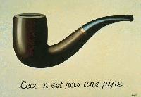

Introduction
Rules
Practice
Drills
Verbal
Hands-On
Hybrid
Submit


The OM Spontaneous Archive
 |
|
|
|
|


Verbal Problems
Name things that...
- are red, blue, yellow, green, etc...
- fall, rise, inflate, shrink, grow, expand, repeat, etc...
- are letters, are numbers
- are keys, sets, points, quarters, heads
- are containers and what they contain
- transport and what they transport
- eat and what they eat
- are superior and what they're superior to
- are made of parts and what the parts are
- create and what they create
- are hidden and what hides them
- are added to something and what the result is
- help something, and how they help
- are anachronisms: "If _blank_ had _blank_,
_(what would happen)_."
i.e. "If cavemen had electric guitars, they'd rock." - contain wood, water, air, fire
- are juggled
- search and what they search for
- are stones
i.e. "Rolling stones", "Kidney stones", "Flintstones" - are openings and who opens them
- are stored, and where they are stored
- destroy something, and what they destroy
- have hands
i.e. "A clock", "Bridge", "A coat of arms" - hold things together, and what they hold
(Submitted by Elizabeth Batson) - are secret
i.e. "Top secret", "'Secret' brand deodorant", "What they put in hot dogs" - are wrapped, and what wraps them
i.e. "Egg rolls are wrapped in dough", "Cars wrap around telephone poles", "Verses are rapped by rappers", "I rapped on the door" - are short, tall
i.e. "Strawberry shortcake", "Shorts", "Time is short" - flow
i.e. "My thoughts", "A river", "Lava", "A flower" - run, and what makes them run
i.e. "A cold makes my nose run", "Double clicking makes a computer program run" - get mad, and what makes them mad
i.e. "A full moon makes a lunatic mad", "Gum makes my teacher mad", "Drunk driving makes MADD mad" - repeat
i.e. "The sun repeatedly rises", "A metronome", "I repeat, a metronome" - are mean
i.e. "A car thief's mean", "An average can be the mean" - are links, and what they link
i.e. "A chain of hot dogs links them together", "History is a link to the past", "This is a link to Matt's homepage" - are homes
i.e. "A mansion", "Sherlock", "A plate" - repel, and what they repel
i.e. "Insect repellent repels mosquitoes", "Multiple-choice tests repel creativity" - attract, and what they attract
- money can't buy
- absorb, and what they absorb
i.e. "Computer chips absorb data", "Bounty absorbs spills" - are ridden, and what rides them
i.e. "Commuters ride the train", "Fleas ride dogs", "The sick are bed-ridden" - are trees
i.e. "Oak tree", "One, two, tree", "Entry", "Binary tree" - are plants
- are bunches
- are quick
i.e. "Quicksand", "Nestle Quik", "A race car" - are wells
i.e. "Wishing well", "Wells Fargo", "Beef Wellington" - are pairs
- are different ways people and animals use
warnings
i.e. "Birds sing to warn other birds of their territory." - are horses
- are ships
- are birds
i.e. "Bluebird", "Bird brain", "Caring for birds is such a birden" - are watched, and who or what watches them
- are depressed
(This upbeat problem submitted by Scott Meuleners.) - are unhealthy
- can't be measured
- join people together
- are impossible, and why
- have legs
i.e. "Animals", "tables", "Women who buy the pantyhose in the egg-shaped container", "Pirates have wooden legs" - are uncountable
- can be traded, and what they can be traded for
- people learn without being taught
- are hard about being an adult
(Submitted by Gman) - (Submitted by Icebox)
- are types of lines
- are unnatural
- lead, and what they lead
- can't be explained
- are different ways people and animals use sound
- are different ways people use words
- are different ways to use a math book, aside from learning math
- turn
- are ways to get rid of 30 inches of snow
- have no name
- are units of measure and what they measure
i.e. "An inch measures a paperclip", "A hair measures how much I won the race by"
(Submitted by Kelsey Alexander) - are things that take time
- are things that take up space
- are new words you'd propose for the English language, and what they mean
- are round
- are signs, and what they are signs of
- stand
- are found under water
- fly
- support other things, and what they support
- change color
- kinds of tools
- fly
- are light
- are lighter than air
- are kinds of boards
- are types of transportation
- are water
- are complements
- attack other things
- occur in a series
- can be opened
- can be saved
- are cleaned
- happen every day
- pop
- are rhymes that have to do with the sea
i.e. "I don't like a shark in the dark"
(Submitted by Dan O'Reilly) - have a bee in them (by Jeff Linder)
- are fuzzy (by Jeff Linder)
- are related to time (by Jeff Linder)
- you might find on the moon and how they got there (by Jeff Linder)
- are cars (by Jeff Linder)
- bounce (by Jeff Linder)
- are X's (by Jeff Linder)
- are surrounded by other things
- are hard to move
- are found in the winter, spring, summer, fall
- crumble
- spill
- can crash
- you won't see on television
- can alleviate boredom
- would be useful in the woods, and how
- aren't widely believed
- aren't made anymore
- are colorless
- are ancient
- are tails
- have two sides
- regulate other things
- can't be divided
- an ancient Greek would say if he were alive today
- are kinds of tests
- can be seen, but not heard
- could have happened in the past, but can't happen today
- take time
- come from the ground
- come in different colors
- reflect other things
- come from the sea
- come in pairs
- can be recycled and what they can be recycled into
- fuzzy
- soft
- shiny
- long
- jump and what they jump
- climb and what they climb
- leak
- monitor and what they monitor
 protect something, and what they
protect
protect something, and what they
protect
(submitted by Erin Gulick)- people lose, and the people that lose them
(submitted by Erin Gulick) - people did as kids, but stopped doing as adults
(submitted by Erin Gulick) - people give to someone, who gives it, and who
they give it to
i.e. "A boxer gives his opponent a black eye"
(submitted by Erin Gulick) - drive your coach mad
(submitted by Jessica Tavasti) - are different kinds of dogs
More Verbal Problems
 Competitions
Competitions
Name competitions you would or would not like to place first, second, or last in.
Excuses, Excuses
Explain to your teacher why you didn't hand in your homework.
Opposite Challenge by Lee
Semel
One minute to think, three to answer. Use numbered index cards to determine the order of responses. The team member whose number corresponds to the first index card names something or someone, and flips the top card. The team member whose number appears must name its opposite. He then flips a card, and the team member indicated names something or someone, the next team member names its opposite, and so on. Each pair of answers gets scored 1 point if it is common (black-white, male-female) or 5 points if it is creative or humorous (military-intelligence, OM-boredom). The challenge of this problem is for the team member who has to name the initial person or thing to choose something that the next respondent can turn into a creative answer.
Spontaneous is like a box of chocolates...
Describe things which are like a box of chocolates, and why.
The Perfidy of Spontaneous by Lee Semel

The
Perfidy of Images, Rene Magritte, 1928
The caption reads "This is not a pipe". What is it, then?
Rock & Roll
Use the words "rock" and "roll" together in a sentence. For example, "This hamburger is so burnt, it's like a rock and roll!"
Heavier Than
Each team member must name something heavier than the object named by the previous team member. Start by having the first team member name something heavier than a brick. (1 pt common, 3 pts creative). Also try the problem using duration, rather than weight: name things that take longer or last longer than the previous thing named.
Letter Chain submitted by Elizabeth Batson
Make a chain of words, all beginning with the same letter, where each pair of words has some relationship. The judge gives the team a starting letter. The first person gives a word starting with that letter. The second repeats the first word and then gives another word, beginning with the same letter and tells the connection between them. For example if the letter is "L", the first person says, "ladder". The second person says, "ladder, long, a ladder is long." The third person might say, "long, leaf, the willow has long leaves."
The team should probably have a stack of index cards with letters on them, and after each team member responds, the top card should be turned over to reveal a new starting letter.
Animal Rhymes
Make rhymes involving animal names. An erudite example would be "Drosophila melanogaster: the fly that breeds faster!"
Fire by Jeff
Linder
In ancient times, mankind lived in caves, ate their meat raw, and generally lived primitive lives. After the discovery of fire, things changed dramatically. Name a significant discovery and something that changed as a result of it.
Crossing the Road by Allen Ball
You have 1 minute to think, 3 minutes to respond. Each team member will pretend that he or she is an animal crossing the road. After everyone has gone, each member will start over, as the same animal as before... but this time there is a very large Winnebago barreling down the road towards them. Score 1-10 for the creativity and humor of each portrayal, maximum 100 points.
The More Things Change by Lee Semel
It's been observed that "the more things change, the more they stay the same". Try to support this idea. Describe things that change, but remain essentially the same as they were.
Decisions, Decisions by Lee Semel
People have always been looking for ways to help them make decisions... from looking at the stars to using scientific data. Name decisions people make and ways they decide. Extra points for creative, perceptive, or otherwise unusual answers.
The Good and the Bad by Lee Semel
Describe things that are good or beneficial in one situation or context, but bad or harmful in another. For instance "A mouse is bad in your house but good attached to your computer" or "Bacteria's good in cheese but bad in your body" or "Sugar's good for children but bad for someone with diabetes". Common answers, 1 point, puns 2 points, creative or insightful answers, 3 points.
Speechless by Lee
Semel
Describe ways to communicate without speech or written words. (You, of course, may speak your answers.)
Children and Adults by Lee Semel
Children and adults think differently about most things. Describe something that children and adults think differently about, or have different opinions about. Commons answers, 1 point, creative or insightful answers, 3 points.
Peas by Lee Semel
You have a truck loaded with 5000 pounds of peas. What could you do with this?
Story Lines by Lee Semel
- Problem: Your problem is to create two stories. Each team member must go in turn. You must follow the list below in making your stories. Start at the top of the list. If a line is printed on the list, the team member whose turn it is must use that line. Otherwise, the team member may say anything he or she chooses to add to the story.
- Timing: You will have three minutes to think and five to respond.
- Scoring: Coherence and quality of the two
stories, 1 to 10 each
Creativity of the two stories, 1 to 15 each
How well the required lines are incorporated, 1 to 15 each story
Creativity of each addition to the story, 1 or 3 - Here is the list. The first team member starts at one, and must say the line printed there. The next team members can say anything at all. The fourth team member must use the preprinted line, and so on.
- Any team member: "There was
something strange about the box we
received from OM headquarters."
1.
2.
3. "But that would be impossible!"
4.
5.
1. "We decided to ask someone who might have an answer."
2.
3.
4.
5. "What had happened? We may never know."
At this point team member 4 starts the second story, using the list below.
- 4: "There was something strange
about the box we received from OM
headquarters."
5.
1.
2. "But that would be impossible!"
3.
4.
5.
1.
2.
3.
4. "What had happened? We may never know."
With these particular lists, every team member gets exactly three responses.
- Any team member: "There was
something strange about the box we
received from OM headquarters."